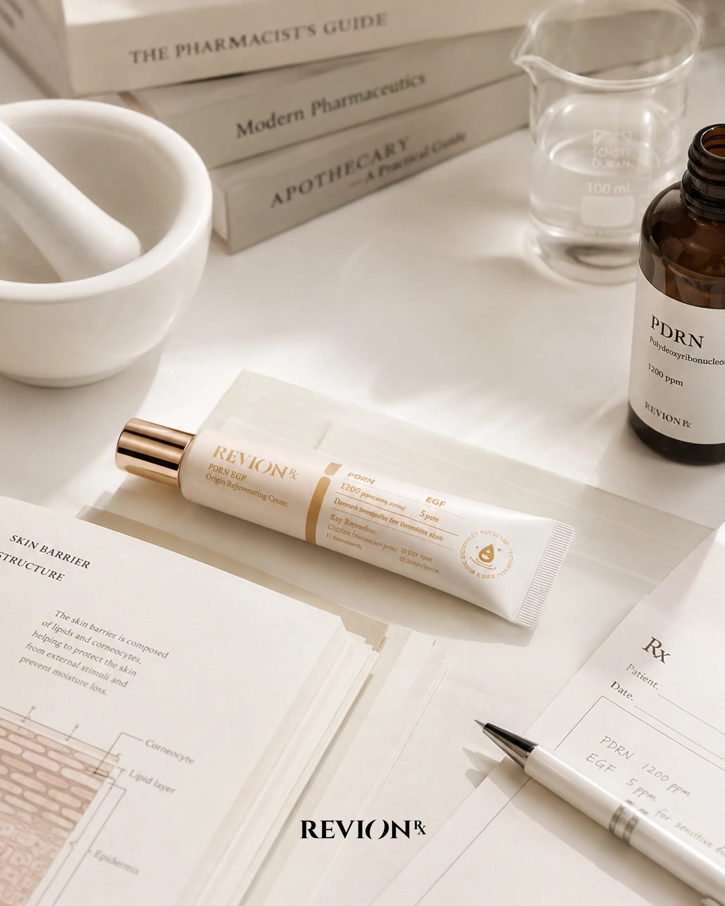

민감 피부도 자극 없이 매일
평소 수분크림을 바르면 따끔한 느낌이 있었는데, 레비온 크림은 첫날부터 자극이 전혀 없었어요. 1주일 사용 후 트러블 자국이 옅어진 게 보여요. 약사님 추천 받아 사길 잘했어요.
김**
PDRN EGF Cream
레비온을 사용한 약사·고객의 진짜 후기와 궁금증을 만나보세요.
총 1,284개의 리뷰
평소 수분크림을 바르면 따끔한 느낌이 있었는데, 레비온 크림은 첫날부터 자극이 전혀 없었어요. 1주일 사용 후 트러블 자국이 옅어진 게 보여요. 약사님 추천 받아 사길 잘했어요.
시트가 두껍고 에센스 함량이 정말 많아서 한 장 다 쓰는 데 30분 걸렸어요. 끝나고 보니 피부가 광 자체. 친구들한테도 추천하는 중입니다.
SPF50 선크림은 항상 답답한 느낌이었는데, 이건 가볍게 발리고 백탁 거의 없어요. 다만 향이 살짝 있는 편. 그래도 자극은 없고 발림성은 만점.
친정엄마 생신 선물로 기프트 세트 구매. 박스 자체가 고급스러워서 별도 포장 안 해도 됐어요. 엄마가 너무 좋아하셔서 다음에 또 구매할 예정.
한 번에 다 쓸 수 있어서 좋고, 가격도 단품 대비 합리적. 여행 갈 때 그대로 들고 가서 잘 사용하고 있어요.
제가 약사인데, 환자분들께도 자신있게 추천드립니다. 임상 데이터 신뢰감 있고 자극 정말 없어요. 진열대 1번 자리에 두고 있어요.
답변 준비 중입니다. 빠른 시일 내에 답변드리겠습니다.
레비온 마스크팩의 모든 성분은 임산부 사용 안전성 평가를 통과했습니다. 다만 개인의 피부 상태에 따라 이상 반응이 있을 수 있어, 사용 전 담당 산부인과 전문의와 상담해주시는 것을 권장드립니다.
레비온 선크림은 화학자외선차단제 기반으로 백탁이 거의 없는 편입니다. 다만 두껍게 도포하실 경우 일시적으로 보일 수 있으니, 콩알 크기 정도로 얼굴 전체에 가볍게 펴 발라주시면 자연스럽게 마무리됩니다.
레비온 전 라인의 EGF 함량은 2ppm으로, 시판 더마 코스메틱 평균(약 1ppm) 대비 2배 수준입니다. 또한 PDRN과 페어링되어 회복 효과가 한층 깊어집니다. 자세한 임상 데이터는 브랜드 스토리 페이지에서 확인하실 수 있습니다.
선물용 구매 시 영수증은 박스에 동봉되지 않으며, 이메일로만 발송됩니다. 주문 시 '선물 포장' 옵션을 선택하시면 가격 표시 없이 정중하게 포장해 드립니다.
 언론보도
언론보도
코스인코리아닷컴
올해 상반기 전국 약국 1,200곳 입점을 달성한 레비온은 PDRN과 EGF 듀얼 부스팅 포뮬러로 민감 피부 시장을 공략하고 있다.

저널REVION JOURNAL
레비온 R&D팀이 직접 공개하는 PDRN 함량 측정 방식과 임상 시험 결과. 99% 순도가 의미하는 것은 무엇인가.
 인터뷰
인터뷰
매일경제
약사 출신 창업자가 말하는 더마 코스메틱의 미래와 약국 채널이 가진 신뢰의 가치.
 언론보도
언론보도
중앙일보 헬스미디어
최근 진행된 소비자 조사에서 민감성 피부 사용자의 약국 구매 선호 이유로 '약사 상담'과 '성분 신뢰'가 꼽혔다.
 저널
저널
REVION JOURNAL
표피 성장 인자가 어떻게 피부 자체 회복 시스템을 자극하는지, 단계별로 풀어보았습니다.
 인터뷰
인터뷰
뷰티+ 매거진
PDRN 1,200ppm은 어떻게 만들어지는가. 레비온 R&D 총괄이 직접 풀어주는 포뮬러 설계 이야기.